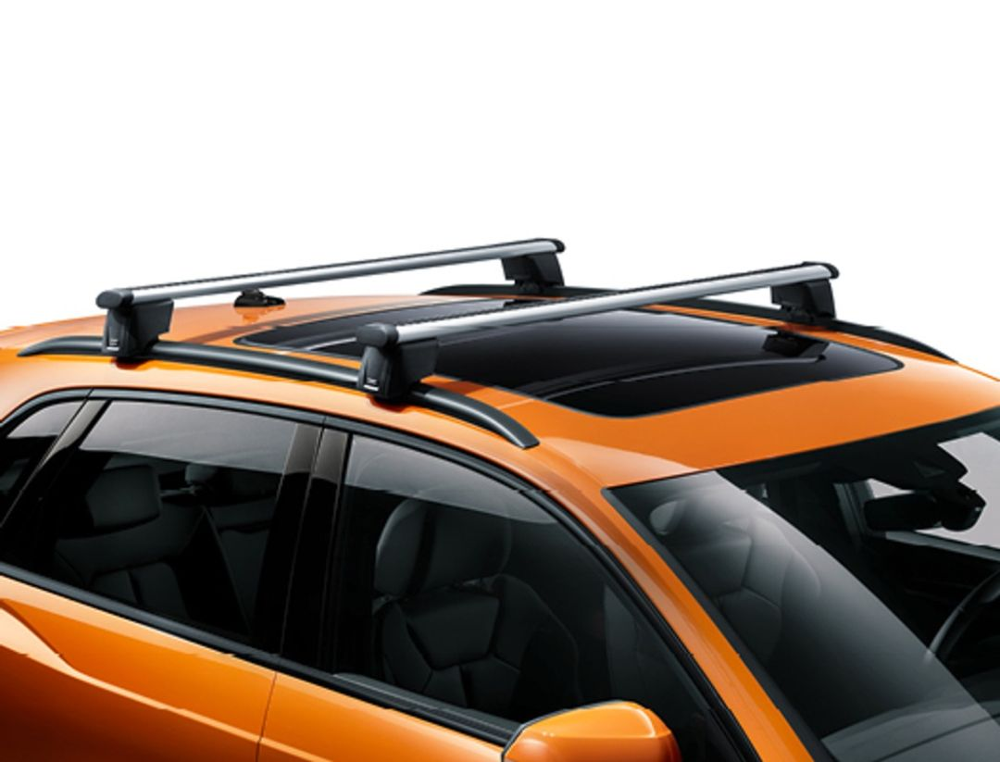

Exportación de Roof Rails
Minth México Coatings S.A. de C.V.
Minth México Coatings S.A. de C.V.
Los Roof Rails son rieles metálicos instalados en techos de vehículos SUV para transporte de carga o accesorios. Están fabricados con aluminio anodizado, con acabado resistente a la corrosión y cumplen normas internacionales.



El mercado japonés valora la funcionalidad y diseño en accesorios automotrices. Con más de 3 millones de SUV, existe alta demanda por Roof Rails de calidad.
| Factores de oferta | Notas |
|---|---|
| Precio | Competitivo, fijado en USD, considerando costos de producción y mercado japonés. |
| Costos de producción | Aluminio anodizado de alta calidad, procesos eficientes para mantener costos bajos. |
| Precio de otros productos | Precios similares o ligeramente más bajos que competidores como INNO, Thule. |
| Competencia Directa o Indirecta | Empresas japonesas e internacionales que ofrecen Roof Rails con certificación JIS. |
| Cambio en la disponibilidad de recursos | Materia prima estable, con relaciones consolidadas para evitar desabasto. |
| Tramitología | Documentación y certificaciones estándar para exportación a Japón cumplidas. |
| Tipo de moneda | USD para exportación, convertibilidad asegurada con mercado japonés. |
| Materia prima | Aluminio anodizado con acabados resistentes a la corrosión. |
| Tipo de embalaje | Empaque diseñado para protección y transporte eficiente, acorde a normas internacionales. |
| Factores de demanda | Notas |
|---|---|
| Ingresos | Proyección de ingresos basados en exportación de 10,000 unidades anuales a Japón. |
| Tipo de moneda de exportación | USD |
| Gustos y preferencias | Preferencia por accesorios resistentes, duraderos y con diseño moderno para SUV. |
| Precios de bienes y servicios relacionados | Competitivos dentro del rango de precios de accesorios automotrices premium. |
| Precios de sus competencias (Directa o Indirecta) | Similar a Thule e INNO, con estrategia de precio ligeramente más competitiva. |
| Expectativas de los consumidores | Alta calidad, cumplimiento normativo y buen servicio postventa. |
| Cantidad de consumidores potenciales | Más de 3 millones de SUV en Japón como mercado potencial. |
| Área de la empresa | Nombre | Contacto |
|---|---|---|
| Marketing | Laura Gómez | laura.gomez@minth.com.mx |
| Ventas | Carlos Martínez | carlos.martinez@minth.com.mx |
| Producción | Ana Pérez | ana.perez@minth.com.mx |
| Operación | José Ruiz | jose.ruiz@minth.com.mx |
| TI | María López | maria.lopez@minth.com.mx |
| Tipo de encuesta | Núm. de personas consultadas | Conclusión |
|---|---|---|
| Encuesta descriptiva | 200 | El 85% prefieren Roof Rails con acabados resistentes y diseño moderno. |
| Entrevistas abiertas | 30 | Se identificaron oportunidades para mejorar compatibilidad con SUV japoneses. |
| Estudio de mercado | 500 | Alta demanda esperada en regiones urbanas y suburbanas de Japón. |
| Ciclo económico | Duración del ciclo | Descripción |
|---|---|---|
| Expansión | Mediano plazo | Crecimiento sostenido en la venta de SUVs y accesorios automotrices en Japón. |
| Pico | Corto plazo | Alta demanda durante temporadas turísticas y festivales automotrices. |
| Recesión | Corto plazo | Momentánea reducción en ventas debido a ajustes económicos globales. |
| Depresión | Largo plazo | Escasa probabilidad, pero considerada para escenarios negativos. |
| Comedero | No aplica | N/A |
| Recuperación | Mediano plazo | Recuperación gradual tras periodos de recesión y ajustes económicos. |
| Elemento | Ajuste del nicho de mercado |
|---|---|
| Precio | Competitivo, buscando maximizar penetración sin sacrificar margen. |
| Factores demográficos | Enfocado a usuarios de SUV entre 25 y 50 años en zonas urbanas japonesas. |
| Factores geográficos | Regiones metropolitanas como Tokio, Osaka y Nagoya. |
| Necesidad a satisfacer | Accesorios resistentes que mejoren la funcionalidad y estética del vehículo. |
| Factor de la competencia | Descripción de la competencia | Descripción del producto o servicio de la empresa |
|---|---|---|
| Público objetivo | Usuarios de SUV interesados en accesorios premium en Japón. | Consumidores que buscan calidad y certificación internacional a precio competitivo. |
| Ventaja competitiva | Marcas establecidas con reconocimiento y amplia red de distribución. | Producto con certificación JIS, calidad comparable y mejor precio. |
| Beneficios para consumidores | Durabilidad, diseño y servicio postventa confiable. | Calidad garantizada, servicio postventa eficiente y soporte técnico. |
| Experiencia de usuario | Facilidad de instalación y uso. | Producto adaptable a diversos modelos de SUV japoneses. |
| Estrategias de contenido | Publicidad en redes sociales, ferias y catálogos digitales. | Campañas de marketing digital enfocadas en calidad y precio. |
| Percepción del público | Confianza en marcas reconocidas. | Reconocimiento creciente por calidad y costo-beneficio. |
| Materiales, empaques o etiquetas | Empaque premium y etiquetas con certificación visible. | Empaque resistente con información clara y certificaciones. |
| Desventajas competitivas | Precios más elevados y limitada disponibilidad en algunas regiones. | Menor reconocimiento de marca comparado con líderes, canal de distribución en desarrollo. |
Nombre: Brian Josué Rodríguez López
Puesto: Analista de Exportaciones
Correo: brian.rodriguez@minth.com.mx